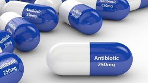

Setiap jenis antibiotik akan memicu terjadinya efek samping yang berbeda. Efeknya bisa ringan atau justru lebih parah. Menggunakan resep dokter pun tak akan menghindarkan kamu dari efek samping saat mengkonsumsi obat ini, apalagi jika kamu mengonsumsinya tanpa pertimbangan dari pakarnya.
Antibiotik menjadi jenis obat yang memiliki efek keras, tetapi tetap efektif untuk menekan sekaligus mematikan bakteri yang menjadi penyebab munculnya penyakit.
Meski begitu, kamu tetap perlu tahu bahwa obat satu ini juga mempengaruhi kerja otak sebagai organ penting dalam tubuh. Sangat rentan terjadi depresi dan kecemasan berlebihan hanya dengan satu antibiotik.
Penggunaan obat antibiotik pada anak tak hanya berdampak pada kenaikan berat badan saja, tetapi ada juga ada efek yang bisa terjadi dalam jangka panjang. Kondisi ini lantas turut dihubungkan dengan masalah diabetes tipe 2. Pasalnya, seseorang dengan kondisi kegemukan atau obesitas memang memiliki risiko lebih tinggi mengalami diabetes tipe 2.
Antibiotik memang efektif untuk membasmi bakteri. Namun, apabila obat ini dikonsumsi dengan dosis berlebihan, bakteri baik yang terdapat dalam tubuh pun akan ikut hilang.
Beberapa orang mendapati kondisi perut menjadi lebih baik setelah minum antibiotik. Meski begitu, ada pula yang mengalami gangguan perut setelah mengkonsumsinya.
Dalam beberapa kasus, konsumsi antibiotik berlebihan akan meningkatkan risiko terjadinya masalah pada usus, misalnya penyakit Crohn, iritasi pada pencernaan, dan kolitis ulseratif.
Terjadinya resistensi antibiotik atau kebal juga bisa terjadi saat kamu mengonsumsi antibiotik dalam dosis yang tidak sesuai dengan anjuran dokter. Jadi, pastikan kamu tidak mengkonsumsi obat ini tanpa resep ya. Dokter tentu lebih mengetahui jenis dan takaran obat sesuai dengan kondisimu.
Yuk, konsumsi antibiotik secara bijak agar infeksi bakteri teratasi tanpa menimbulkan efek samping pada tubuh. Bagi kamu yang memiliki masalah kesehatan, tanyakan saja langsung pada dokter ya!